Santorini

Adventure?
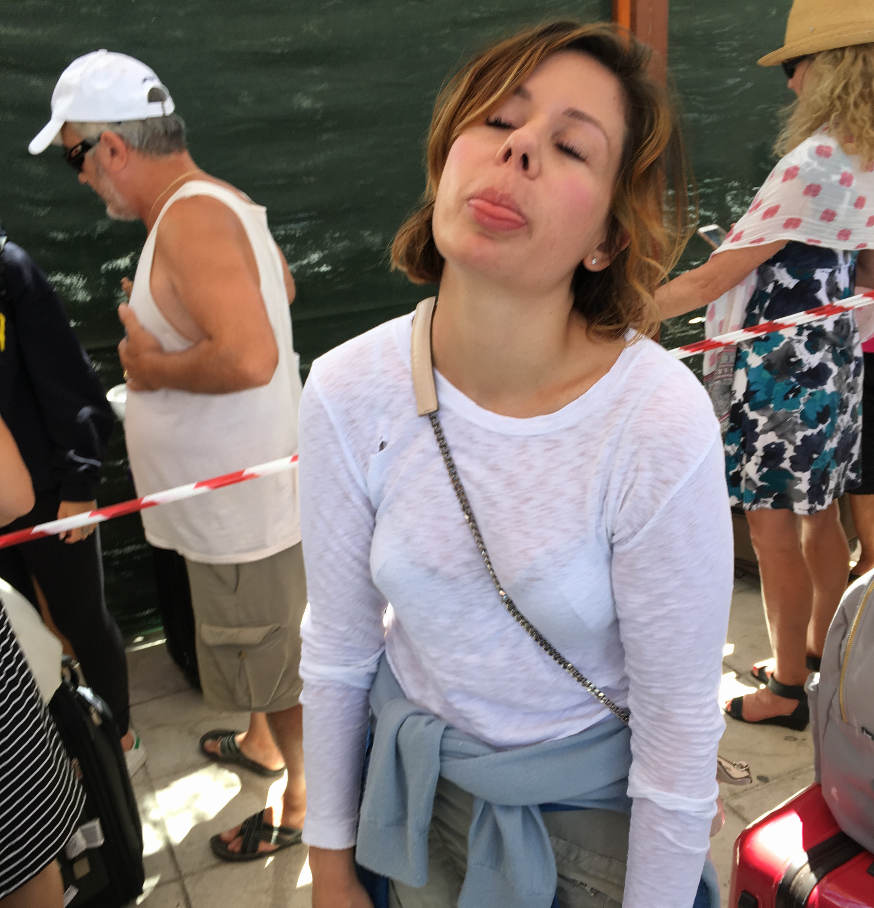
 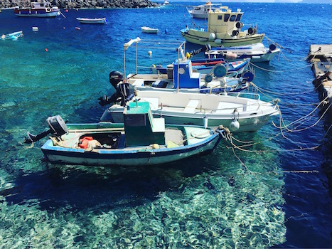
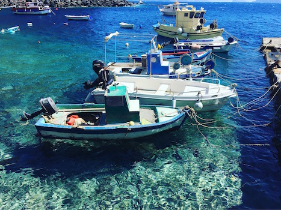
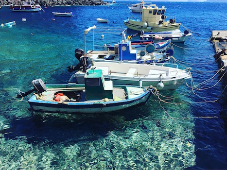
Pooling out
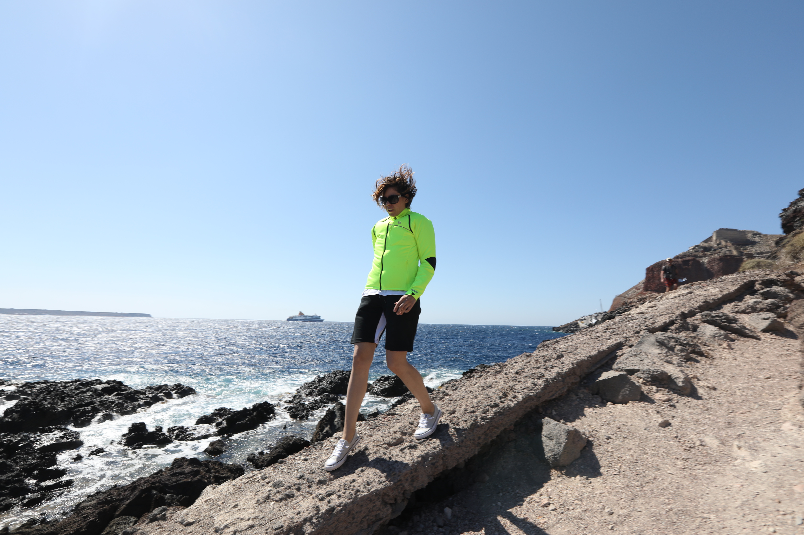
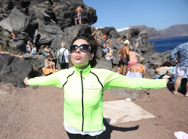
Athens
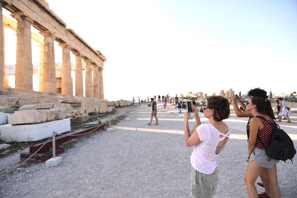
'Which one is the parthenon?', 'Visited the Acrop' and many other delightful phrases amidst our co-hikers however, I was full of humility as a result of a fairly agressive hangover at the time. Still, I was amused to see so many women wearing heels (and not those terrible kitten heels -- no, no. these were the real deal) and really, if you want to be carried what better way, what better look? Atop a sweaty gentleman (or very handsome woman), venturing up the ruins channeling greek goddess.
Nothing like those London downpours
A++ to The design museum in London & to pizzicotto, across the street. If not for the art, for pizza.
 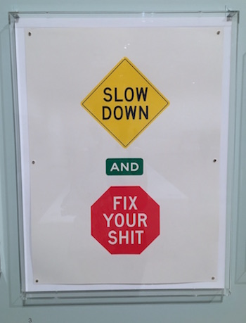
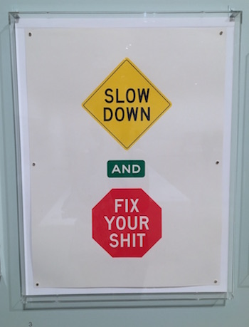
Graduations make me nervous. I look around like 'so, now we are professionals?'' They assure me despite some pretty strong doubts, so I change tack, take the paper and look natural.
Good for your bones
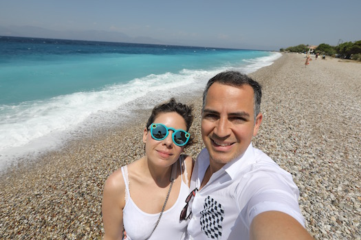
We all probably have that one summer in Italy that we were obsessed with gelato and ate it everyday for nearly every meal (if you eat it as a meal it counts, dammit!) The heat of Greece brought out this early demon-monster who, it pains me to say, did come back from Barcelona one summer pronouncing it 'Barthelona' to all her friends who had the great courtesy to roll.their.eyes.forever. until I just stopped.
London
Nature, why?
Ada Graduation
#neverforget
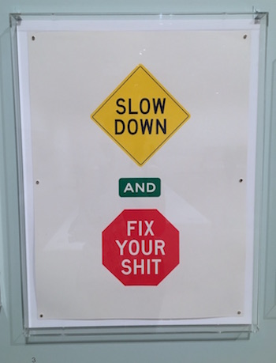